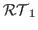

The finite element method is an important tool for the simulation of
elasticity problems in solid mechanics. It is well known that the linear
elastic theory does not cover arising real life problems. Physically more
realistic models lead to nonlinear partial differential equations.
In this talk we present a least squares finite element method based on
the momentum balance and nonlinear constitutive equations for
hyperelastic materials. Our approach is motivated by a well-studied
least squares formulation for linear elasticity. This method is
generalized to an approach which takes nonlinear kinematics and nonlinear
stress-strain relations into account. The novelty of our approach, in
comparison to other discretization methods, is that next to the
displacement
the full first Piola-Kirchhoff stress
tensor
is considered and both are approximated
simultaneously.
In the discrete formulation we use Raviart-Thomas elements

for the stress tensor and continuous piecewise quadratic elements for the displacement vector. For the minimization of the nonlinear least squares functional, the Gauss-Newton method with backtracking line search is used.At the end of the talk we will illustrate the performance of our method for some two dimensional problems in plane strain configuration and some three dimensional problems. Here we use constitutive equations of Neo-Hooke/Mooney-Rivlin type and the least squares functional as a-posteriori error estimator for adaptive mesh refinement. Our approach works also for (quasi-) incompressible materials and the least squares functional tends to identify the regions of interest.
References